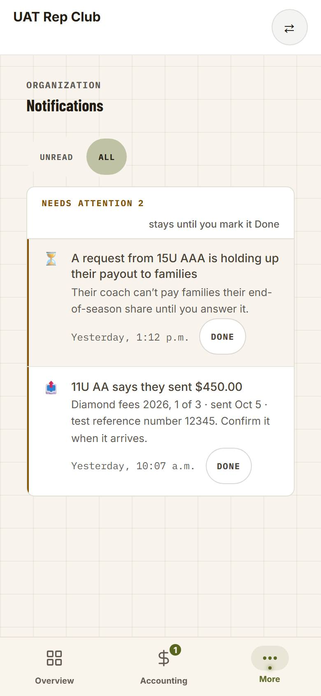
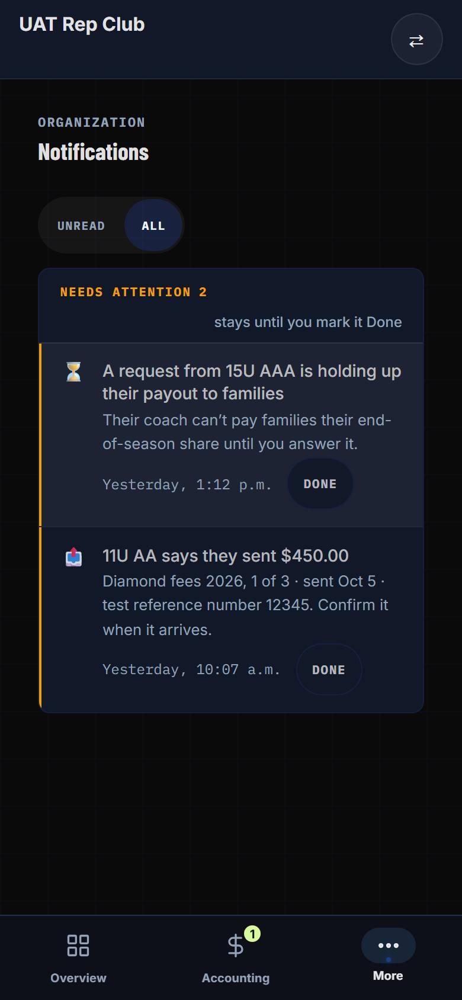
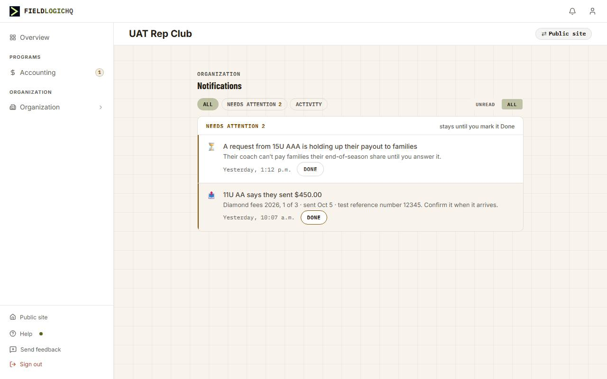

A request from 15U AAA is holding up their payout to families
Their coach can’t pay families their end-of-season share until you answer it.
11U AA says they sent $450.00
Diamond fees 2026, 1 of 3 · sent Oct 5 · e-Transfer 8842. Confirm it when it arrives.
A request from 15U AAA is holding up their payout to families
Their coach can’t pay families their end-of-season share until you answer it.
11U AA says they sent $450.00
Diamond fees 2026, 1 of 3 · sent Oct 5 · e-Transfer 8842. Confirm it when it arrives.
3 new registrations
2h ago
A coach joined 13U AAA
Sam Patel accepted your invitation and joined 13U AAA as an assistant coach.
7:05 p.m.
13U AAA filed a $180.00 request
To club · Tournament refund — the club’s share
Sep 22
⏳A request is holding up a team’s payout· Sun, Oct 5 · 2:14 p.m.
Their coach can’t pay families their end-of-season share until you answer it.
The club’s Payment requests screen in a 1200px window with the bell open, redrawn from your screenshot at true size. The panel is 320px wide; your browser was zoomed, which is why it looked bigger. Each numbered marker opens its decision.
The rows are drawn with the bell’s own measurements: 13px title and 12px message, each cut to one line, with Clear on the time line of a Needs-attention row.
A 380px drawer on the right, under the top strip, the full height of the window. It carries everything the “See all” page does: Unread and All, Mark all read, the list by day, and Load more at the end. The settings gear moves into its header. The page behind is dimmed lightly; a click on it closes the drawer.
New the drawer · Restyled settings and Load more · Removed “See all” · Restyled Clear becomes Done · New the trash · Unchanged the rows
A click on a row opens a 440px pane to the left of the list, and the drawer grows to 820px. The row you are reading is highlighted. A click on another row swaps the message. × on the message closes it and the drawer goes back to the list alone.
New the message pane · New the selected row
🧑🏫Coach joined from your invitation· Sat, Oct 4 · 7:05 p.m.
Sam Patel accepted your invitation and joined 13U AAA as an assistant coach.
📋New registration· Sun, Oct 5 · 1:40 p.m.
New registration: Burlington Bulls
13U · Added manually
Sun, Oct 5 · 1:40 p.m.
New registration: Oakville Oaks
13U · Paid online
Sun, Oct 5 · 11:02 a.m.
New registration: Milton Mustangs
15U · Paid online
Sun, Oct 5 · 9:15 a.m.
The drawer opens on any window wider than 900px, the point where the top strip and its bell appear. At 1024px, the size of a small laptop or a tablet held sideways, a message and the list together leave about 200px of the page, most of it the sidebar.
Below 900px neither portal shows its top strip. An admin reaches notifications through More, then Notifications, a full page. A tap on a row there still loads an unnamed page. The coach’s page has opened the reader as a sheet since 09-25; the admin’s page gets the same sheet. These frames are drawn, not captured: the page’s exact rows may differ slightly.
New the admin’s reader sheet · Unchanged the coach’s phone
Each one answers a different question, so each gets its own word. An opened notification also has one button forward, named for the place it opens, and a way to close: × on the drawer’s pane, Close on a phone.
“Have I seen it?” Happens by itself when you open a notification. The unread dot goes, and the bell’s count drops. Mark all read does it to the whole list at once.
Where: automatic on open · Mark all read in the drawer’s toolbar
“Have I dealt with it?” Only on Needs attention. Takes it out of Needs attention; it stays in your list below, read. One at a time on purpose: there is no “all done”.
Where: on the row, and in the opened notification · today’s word is Clear
“Do I want it at all?” Any notification. Gone from your list; the request or payment it was about is untouched, and so is everyone else’s copy. Undo for a few seconds, no “are you sure?”.
Where: on the row under the pointer, and in the opened notification
Today “Mark all read” leaves every Needs-attention notification unread. In the drawer on screen 2, “11U AA says they sent $450.00” keeps its dot after you press it, which is what made the two buttons look like they overlap. Round 3 makes it mark everything read, reversing your 09-03 rule (decision 9 has why). Needs attention is unaffected, because a notification only leaves it when you mark it Done. The cost: the bell’s red count no longer stays up for a decision you have marked read but not dealt with. The amber Needs-attention count in the drawer still shows it.
No confirmation: the notification goes at once, and a note at the drawer’s foot (or above a phone’s bottom bar) offers Undo for a few seconds.
| Notification | Today’s click | The button | Where it lands |
|---|---|---|---|
| A request from 15U AAA is holding up their payout to families | Loads Payment requests, unnamed | Open the request | That request, opened, when there is one. “Open Payment requests” when several are holding the payout. |
| 11U AA says they sent $450.00 | Loads the allocation with 11U AA’s bill open, unnamed | Open the bill | Diamond fees 2026, 11U AA’s bill open (as today) |
| 15U AAA filed a $480.00 request | Loads Payment requests, unnamed | Open the request | That request, opened |
| 3 new registrations (a bundle) | Marks all three read, loads Registrations | Open Registrations | That tournament’s registrations (as today) |
| A coach joined 13U AAA | Loads the team, unnamed | Open the team | 13U AAA in Rep teams (as today) |
| A chat message | Loads Chat | Open Chat | As today (the name already exists) |
| Coach · Weekly team insights | Coach page: opens the reader | Open Insights | Unchanged, built 09-25 |
The button’s words come from the address it opens, in the words of the screen it lands on, as the coach’s names do. Today that list knows only coach pages, so every club and tournament page would read “Open in admin”, which tells someone already in admin nothing. The build adds the admin pages. One change goes past the reader: the holding-up notice will carry the request when there is exactly one, so it can open that request instead of the whole list.
There are five places a notification can be clicked. After this change every one of them opens it first, and a page is always the second, named step. A computer reads notifications in the drawer; a phone reads them on the Notifications page.
| Where | Today | Proposed |
|---|---|---|
| Club and tournament admin on a computer · the bell (your screenshot) | A click loads the page; “See all” goes to the full page | The drawer: the whole list, and a notification opens beside it (D2, D6) |
| Coach on a computer · the bell | A click loads the page; “See all” goes to the full page | The same drawer |
| Admin on a phone · More › Notifications | A tap loads the page | A tap opens the reader sheet (D5) |
| Coach on a phone · More › Notifications | Opens the reader sheet (built 09-25) | Unchanged |
| Either Notifications page on a computer, reached by its address, an old link or a help article | Coach: opens the reader dialog. Admin: a click loads the page | Both open the reader dialog. Nothing on a computer links to the page any more (D6) |
On a computer the message is a pane beside the list in the drawer. On a phone it is a sheet above the bottom bar. On a full page reached from a computer it is a dialog. The kind, the day and time, the title, the message, the buttons and their order are the same block in all three. Only the frame around it differs, so they can’t drift apart.
Drawn before the split drawer, at a 1200px window. A was round 1’s recommendation. All three use the same message block as the split drawer.
Against the split drawer: A leaves most of the page visible, but you go back to the list between notifications, and the message has 320px instead of 440px.
This is the 09-25 reader exactly as it opens on the coach’s notifications page on a computer. It is still how a notifications page opens a message on a computer (screen 7).
Drawn at true size before the drawer is built. Two things differ from screens 2 to 4 because the portal’s written rules decide them (below). The rest of this screen is new: where the Undo note sits, what the drawer says when it has nothing to show or cannot load, and the trash under the keyboard.
The club treasurer opened the holding-up notice, then deleted “A coach joined 13U AAA” from its row. The note offers Undo for six seconds. Both frames are the same moment; only the note’s place differs.
New the note under the list · Restyled the onward button and the switch
Alternative the note under the whole drawer
The words are the Notifications page’s own, so the drawer and the page never say two different things. Mark all read is absent when nothing is unread (decision 6).
Loading…
You’re all caught up
Everything unread is handled. Switch to All to read back through the season.
No notifications yet
Couldn’t load your notifications. Try again
Nothing was marked read.
Today the bell opens on Unread, an inbox you empty. The Notifications page opens on All, an archive. Screen 2 drew All only to show every kind of row. I recommend Unread: the bell is still where you go to see what is new, and Needs attention is pinned above either way. A notification you open stays in the list until the drawer closes, so it never disappears from under the message you are reading.
A request from 15U AAA is holding up their payout to families
Their coach can’t pay families their end-of-season share until you answer it.
11U AA says they sent $450.00
Diamond fees 2026, 1 of 3 · sent Oct 5 · e-Transfer 8842. Confirm it when it arrives.
Q1 the Undo note sits centred under the list, at the drawer’s foot (A) Q2 the four quiet states as drawn, in the Notifications page’s own words Q3 the drawer opens on Unread
Drawn at true size before it is built. The page behind each drawing is a real capture of the club treasurer’s Notifications page on dev today. Only the opened notification is drawn, and every size and colour in it is measured from the coach’s reader as it renders today. A tap on a row opens it and marks it read; nothing loads until you press the lime button.
Decision 5 says the admin’s page gets “the coach’s 09-25 sheet in the admin’s styling”. The plan’s step 3 named the Sheet Frame project’s shared phone frame instead, which the hub’s own plan notes allowed only “if that step has landed”. It hasn’t landed: the coach’s reader is still on its own frame, and Sheet Frame’s step 4 is the one that moves it. The shared frame would also bring the coach portal’s whole stylesheet, about 945KB, onto the admin’s page through its dim. The reader’s own frame brings nothing new, because the admin’s bottom bar already wears the same sheet styles.
Recommended: one reader for both pages. The coach’s reader moves beside the message block, and the admin’s page wears it as it is, with the admin’s button words. Nothing changes for a coach. When Sheet Frame’s step 4 moves the reader onto the shared frame, both pages move together.
Alternative: a second, admin-only reader on the shared frame now. That means two frames to keep in step until Sheet Frame’s step 4, and the 945KB stylesheet loading on the admin’s Notifications page.

⏳A request is holding up a team’s payout· Mon, Oct 5 · 1:12 p.m.
Their coach can’t pay families their end-of-season share until you answer it.
New a tap opens the notification · Unchanged the page and the bar

⏳A request is holding up a team’s payout· Mon, Oct 5 · 1:12 p.m.
Their coach can’t pay families their end-of-season share until you answer it.
Unchanged the More sheet’s surface, in Dark

⏳A request is holding up a team’s payout· Mon, Oct 5 · 1:12 p.m.
Their coach can’t pay families their end-of-season share until you answer it.
New the coach’s small dialog, on a computer
Q1 one reader for both pages: the coach's reader moved beside the message block, and the admin's page wears it Q2 the admin's reader as drawn: a sheet on the bar at 390 (Warm and Dark), the small dialog at 1280
Owner, 2026-10-05, on round 3: “looks good” — all nine as recommended. Each marker on the Mockup tab opens its decision here. Round 2 changed D2, D3 and D5, and added D6 and D7. Round 3 changed D3 and added D8 and D9.
A click on a notification opens it: the kind, the day and time, the whole title and message. It marks the notification read and stays where you are. Going to the page is a second click on a button that names the page.
Recommended. This is the rule you set for the coach’s notifications page on 09-25, and the reason carries over: you can read a notification without leaving where you are. The cost is one more click to reach the page. For a notification you only needed to read, it saves you a trip and a trip back.
Alternative: keep a click going straight to the page, let each row run to two lines, and show the page’s name on hover. That’s cheaper, but the bell still can’t show a long message, and a hover title isn’t a label you can see.
The bell opens a 380px drawer on the right, under the top strip, the full height of the window, holding the list. A click on a notification opens a 440px pane to the left of the list, the drawer grows to 820px, and the row you are reading is highlighted. A click on another row swaps the message. × on the message closes it and the drawer goes back to the list alone. × on the drawer, Escape, or a click on the dimmed page closes everything; Escape closes the message first. A row read during this visit stays in the list until the drawer closes, even under Unread.
Recommended (your idea). The list never leaves while you read, so working down Needs attention is one click per notification, and you can always see which one you are on. The message gets 440px, wider than any other option. The cost is how much of the page it covers with a message open: two thirds of a 1280 window (screen 3), and all but about 200px of a 1024 one (screen 4). While the drawer is open you are dealing with notifications, and its button takes you to the page anyway.
Alternatives (screen 8): A, the bell’s 320px panel turns to the message with a back arrow, which covers far less of the page and costs a Back between notifications; B, a dialog in the middle of the screen; C, a drawer holding only the message.
One button forward, named for the place. Done appears only on a Needs-attention notification (decision 8). A trash deletes any notification: on the row under the pointer, and in the opened notification, set apart at the right. Delete removes it from your own list only, at once, with Undo offered for a few seconds and no “are you sure?”. The way out is × on the drawer’s pane, or Close on a phone. There is no Mark read button.
Recommended (your ask, reversing round 1). Round 1 said deleting a money notice would lose the record of what a team told the club. That was wrong: the payment and the request keep those facts on their own pages, and each person has their own copy of a notification, so deleting yours removes nobody else’s. Nothing ever deletes old notifications today, so without a trash the list under All only grows. Undo instead of a confirmation keeps a slip cheap without asking every time. A Mark read button would do nothing, because opening already marks it read.
Alternatives: no trash (round 1’s answer), where the list grows without end; or a trash only in the opened notification, not on the row, which is one click slower and harder to find.
“Open the request”, “Open the bill”, “Open Registrations”, “Open the team”: each uses the words of the tab or record it opens. When a notification is about one record, the button opens that record and not just its list. The holding-up notice will carry its request when there is exactly one.
Recommended. This answers your second complaint directly: you know where you are going before you click. Today the names exist only for coach pages, so every club and tournament page would read “Open in admin”, which tells someone already in admin nothing. A notice about one request that lands on a list of nine makes you find the request yourself.
Alternative: a plain “Open” button with the page’s name in small print under it. That’s less to build, but the label is the part you actually read.
On the admin’s Notifications page, a tap opens the notification: as a sheet above the bottom bar on a phone (the coach’s 09-25 sheet in the admin’s styling), and as a dialog if the page is opened on a computer.
Recommended, and more important than round 1 said. Neither portal has a bell on a phone, so for an admin on a phone this page is the only place to read a notification, and a tap on it still loads an unnamed page. The coach’s page already does this, so the work is giving it the admin’s styling.
Alternative: leave it for later. Admins on a phone keep today’s problem until then.
The drawer carries what the full page has: Unread and All, Mark all read when there is unread activity, the list by day, Load more at the end, and the settings gear in its header. The “See all” link goes. The two Notifications pages stay, because they are where a phone reads notifications and an old link or help article still lands on one. The drawer leaves out the page’s All / Needs attention / Activity chips (see the alternative).
Recommended. With a full-height list and a message beside it, the drawer does everything the page does, so a link to the page would be a second place on a computer to read the same list. Keeping the pages costs nothing, since nothing on a computer links to them any more.
Alternative: bring the three chips into the drawer as a second toolbar row. In a full-height drawer Needs attention is always pinned on top and Activity follows by day, so I left them out. If you use them on the page, they can come along.
The drawer exists only above 900px, where the top strip and its bell appear. At every width above that, a notification opens beside the list.
Recommended. One behaviour on every computer. At 1024px the page behind becomes a sliver (screen 4), which is acceptable while you are reading notifications.
Alternative: below about 1150px, the message covers the list instead of sitting beside it, with a back arrow (round 1’s A, inside the drawer). That keeps more of the page visible on a small laptop, and costs a second behaviour to learn.
The Needs-attention action keeps what it does (you are finished with this one, and it leaves Needs attention) and changes its word from Clear to Done, with a check. The new word goes everywhere the old one was: the rows, both Notifications pages, the opened notification, the line “stays until you mark it Done”, and the help articles.
Recommended. You asked whether it should read “Mark read”. It can’t: reading isn’t handling. Your first notification is already read and still needs you, because 15U AAA’s request is still waiting. And once a trash exists, “Clear” beside it reads as the same thing. “Done” says what it does.
Alternatives: “Dismiss”, which describes the mechanics but sounds like turning a request down; or keep “Clear”, the word since 09-06, which is the cheapest and the one that confused you.
Mark all read marks every notification read, Needs attention included. Each Needs-attention notification still stays there until you mark it Done, so one press can’t empty your decisions.
Recommended. This reverses your 09-03 ruling (“Mark all read leaves Needs attention alone”). Its reason was that one tap must not make an unhandled decision look handled, and on 09-03 that was true: reading a notification took it out of Needs attention. Since 09-06 only Clear (Done) takes one out, so marking read can no longer empty your decisions. What the old rule still does is keep the unread dot, which is why “11U AA says they sent $450.00” stays unread after you press Mark all read, and “all” doesn’t mean all. The cost: the bell’s red count no longer stays up for a decision you have marked read but not dealt with; the amber Needs-attention count in the drawer still shows it.
Alternative: keep today’s rule and rename the button “Mark activity read”, which is accurate but a mouthful.
D1 yes · D2 split drawer · D3 yes · D4 yes · D5 yes · D6 yes · D7 yes · D8 Done · D9 yes
Q1 the Undo note on a page sits centred under the page’s column, 12px above a phone’s bottom bar (not the save pill’s corner) Q2 a tournament registration notice reads “Open Teams”, not “Open Registrations”: that page is Teams in its nav and its own title (a house league’s page is Registrations and keeps the word) Q3 a score notice reads “Open the game”: its link opens that game’s score editor (“Open Results” when no game is named)
Q1 the drawer’s Undo note sits centred under the list, at its foot, whether or not a message is open (not under the whole drawer) Q2 the drawer’s loading, caught-up, nothing-yet and couldn’t-load states, in the Notifications page’s own words Q3 the drawer opens on Unread, as the bell did; a row opened this visit stays until the drawer closes
Two differences from screens 2 to 4 were decided by the portal’s written rules, not asked: the onward button is lime with dark words (olive is never a button’s fill), and Unread | All is the portal’s own two-way switch (ruling 2026-09-25 D1b).
Q1 one reader for both Notifications pages, not two: the coach’s 09-25 reader (D5’s own words), which loads nothing new on the admin page; the Sheet Frame’s shared frame would have brought the coach portal’s whole stylesheet with it, and it moves both pages at once in its step 4 Q2 the admin’s reader as drawn: a sheet on the bottom bar at 390 in Warm and Dark, the small dialog at 1280
On a computer, the bell opens a drawer on the right holding the whole list of notifications. Clicking one opens it beside the list: what kind it is, the day and time it arrived, the full title and message, and a button that says where it goes, such as “Open the request”. Needs-attention notifications also have Clear. Clicking another notification swaps the message; the list never goes away. Opening a notification marks it read. The drawer replaces the bell’s “See all” link, because it holds everything that page did.
On a phone, where neither portal has a bell, the Notifications page under More opens a notification as a sheet above the bottom bar. Coaches have had this since September 25; admins get it now.
Three actions, each with its own word: a notification is read when you open it (or press Mark all read, which now really marks all); a Needs-attention notification is Done when you have dealt with it (the button that used to say Clear); and the trash deletes any notification from your own list, with Undo for a few seconds.
Today the bell cuts every notification to one line, and a click leaves for a page it never names, sometimes the page you are already on. The notifications that matter most, the club’s money decisions, are the longest, so they are the ones most cut off. A treasurer either clicks blind or ignores the bell.
Every club treasurer and tournament admin, and every coach on a computer. Admins on a phone get the reader sheet. Coaches on a phone see no change. The reader behaves the same for every role; Clear appears only on Needs-attention notifications, as today.
Medium. The club money notifications are new, they are the main reason a treasurer opens the bell, and the club tier is in the run-up to customers.
docs/projects/archive/NOTIFICATIONS_OPEN_IN_PLACE_PLAN.md (with its PM brief and NOTIFICATIONS_OPEN_IN_PLACE_BUILD_PROMPT.md, three steps, one chat each), written 2026-10-05 after D1–D9 were accepted. Where these notes and the plan differ, the plan wins: Delete’s Undo is a deferred delete, no migration.AdminTopStrip and CoachTopStrip, and both strips are hidden at ≤900px (the admin shell zeroes --admin-topstrip-h; the coach strip is display:none). Phones reach /{org}/admin/notifications through AdminKitBottomNav’s More sheet and /{org}/coaches/notifications through the coach More sheet. So the drawer is computer-only, and the panel’s ≤900 rules in notifications.module.css are dead code that goes with the panel.NotificationPanel with a drawer (e.g. NotificationDrawer) opened by NotificationBell: fixed, top = the strip’s height (+ the sandbox banner term the panel already carries), right 0, bottom 0; 380px list; 440px message pane to its left when one is open. Light scrim below the strip; a click on it closes.useNotificationFeed (pagination, Load more, the unread filter, the Needs-attention zone, markSeen) instead of the panel’s own fetch of 40, so the drawer and the pages read one source.open: ActivityEntry | null; a row click calls markSeen then opens; a bundle opens as members; the selected row carries the highlight and aria-current. A seen-this-visit set keeps rows visible under Unread until the drawer closes.role="dialog", labelled; focus moves to the message title on open and back to the row on ×; Escape closes the message, then the drawer (the bell’s useDismissable claims Escape today — the message must take the first press). Boundary for outside clicks = bell + drawer, as now.body with coachWarmAttr for the coach; check how the admin’s warm tokens reach a body-portaled surface (KitDialog deliberately renders in-tree for that reason).seeAllHref footer link; the settings link becomes a gear in the drawer’s header (keep the ?back= return the strips build).components/coaches/CoachNotificationReader.tsx (eyebrow with iconFor + NOTIFICATION_EVENT_LABELS + notificationStamp, title, body or bundle members, actions) into one shared block, e.g. components/notifications/NotificationMessage.tsx, worn by the drawer’s pane, the coach sheet/dialog, and the admin page’s frame. Keep the stamp un-uppercased (the “P.M.” trap).<a href> (full load, R8 deferred), with the 09-25 keepalive on mark-read.NotificationsPageContent passes onOpen to NotificationFeedBody (the prop exists; only the coach page passes it) and renders the shared block in a phone sheet (menu layer) and a computer dialog. Build the sheet on the Sheet Frame project’s shared menu-layer frame if that step has landed.NotificationFeedBody rows, CoachNotificationReader, the aria-labels “Clear … from Needs attention”), the zone hint “stays until you clear it” → “stays until you mark it Done”, the bell tour, and the help articles that mention Needs attention (coach ×7, org ×3, families ×1, platform-admin ×1), including keywords/searchText. The API action clear and the column cleared_at stay: identifiers, not prose..eq('user_id', user.id), as mark-read). Notification rows are per recipient (notify() writes one per user), so a delete touches nobody else’s copy, and nothing today purges old rows. For Undo, prefer a deleted_at stamp (migration + DATA_DICTIONARY + snapshots; every read filters it: the list, the unread count, the Load more cursor, the bell’s Realtime count) so Undo is an un-stamp; the alternative is a client-deferred hard delete flushed with keepalive on leave. Decide in the plan. The trash shows on row hover and on keyboard focus (never hover-only for a keyboard), and in the message pane and phone sheet.ACT_EXCLUDE_IN in app/api/notifications/route.ts and the ACT_EVENT_TYPES skip in both clients’ optimistic updates; anyActivityUnread becomes “any unread”. Rewrite the route’s comment: its claim that the skip is “load-bearing” since 09-06 is wrong, because the zone is computed on cleared_at and read state cannot empty it. Keep a guard that mark-all never writes cleared_at.notificationDestination(link) in lib/notification-view.ts knows coach team pages and Chat, and falls back to “Open in admin”. Add admin pages from the link: payment requests (with ?request= → “Open the request”, without → “Open Payment requests”), allocations (with ?bill= → “Open the bill”, without → “Open the allocation”), tournaments/registrations → “Open Registrations”, tournaments/results → “Open Results”, rep-teams/teams/{id} → “Open the team”, and the rest of the admin link shapes found by grepping link: in notify() callers. Pin the words to the admin nav’s labels in a test, as coach-nav-groups.test.ts does for the coach.lib/club-money-moves.ts holding-payout notice: pass the request id to clubMoneyLinks.requests when exactly one request is held. Check team_request_filed passes its id too.notificationStamp/formatTime.tests/unit/notification-reader.test.ts: admin destination words; a guard that a bell row opens rather than navigates; a guard that no computer surface links to the Notifications pages./docs after the build./demos, not this build.Step 3 gives the club’s Notifications page the reader the coach’s page has had since 09-25, as drawn on screen 10: on a phone a sheet on the bottom bar, on a computer a small dialog. Three walks, one job each, signed off one by one. Tick as you go; the ticks stay in this browser. Build a summary at the bottom and paste it back into the chat. Step 2’s walk (§267) passed 22/22 on 2026-10-06; the QA ledger keeps it.
UAT_REP_CLUB_TREASURER_PASSWORD in .env.local) · UAT Rep Club, at http://localhost:3000/auth/login.node scripts/seed-uat-treasurer-notifications.mjs), each written the way the product writes one today and pointing at a real record: UAT Test Team filed a $450.00 request (unread), A request from 15U AAA is holding up their payout to families and 13U AAA says they sent $450.00 (both read). UAT Rep Club was rebuilt on dev the same afternoon, which wiped the first seeding; if the page ever shows “No notifications yet”, ask Claude to re-run the fixture.On a phone there is no bell, so More › Notifications is where an admin reads. A tap there now opens the notification in a sheet on the bottom bar instead of loading a page it never named.
The sheet rises from the bar and the bar stays visible and lit; the whole message reads; the button reads Open the request; Close, the phone’s Back and a tap on the bar each close it without leaving the page; Open the request lands on that request, open.
Done and the trash (W2); a computer (W3).
Sign in as the treasurer in the 390px window and tap More at the bottom right.
The More sheet rises with Notifications in it and a 1 beside it.
Tap Notifications.
ORGANIZATION · Notifications, and NEEDS ATTENTION 3: UAT Test Team filed a $450.00 request on top with an unread dot (“From club · Diamond permit reimbursement”), then the 15U AAA holding-up notice and 13U AAA says they sent $450.00, each with DONE.
Tap UAT Test Team filed a $450.00 request (the words, not its DONE).
No new page loads. A white sheet rises from the top of the bottom bar, which stays visible and lit beneath it, and the page above is dimmed. In the sheet: a grab line; 🧾 A TEAM FILED A PAYMENT REQUEST with today’s day and the time it arrived; the title; “From club · Diamond permit reimbursement”; a full-width lime Open the request →; and ✓ Done, Close and a square trash in a row beneath. It looks like screen 10.
Tap Close. Then tap the notice again, and go Back (the browser’s back arrow, or a swipe from the left edge on a real phone).
Close closes the sheet, and the notice’s dot is gone. Back closes the sheet too, and you are still on Notifications, not the page before it.
Tap the notice again, then tap More on the bottom bar.
The notification closes and More opens: never two sheets at once. Tap the dimmed page to close More.
Tap the notice once more, then Open the request →.
You land on Accounting’s Payment requests with UAT Test Team’s request open in its window: “Payment request · waiting …”, UAT Test Team asks the club for $450.00.
In an opened notification, Done takes it out of Needs attention, and the trash deletes it from your own list with a few seconds to Undo. Deleting a notice never touches the request it was about.
Done moves the notice below Needs attention, read; the Undo pill sits centred just above the bottom bar and Undo brings the notice back; a delete sticks after a reload; the $450.00 request is still waiting on Payment requests.
A computer (W3).
Go back to More › Notifications, tap UAT Test Team filed a $450.00 request, then ✓ Done in the sheet.
The sheet closes. Needs attention now reads 2, and the notice shows further down under Today, read, with no DONE button of its own.
Tap the notice under Today, then the trash at the right of the sheet’s buttons.
There is no “are you sure?”. The sheet closes, the notice leaves the list at once, and a dark pill, Notification deleted · Undo, sits centred just above the bottom bar.
Tap Undo within six seconds.
The pill goes and the notice is back under Today, read.
Tap the notice, then the trash again. Wait ten seconds, then reload the page.
After the reload the notice is still gone. The 15U AAA and 13U AAA notices are still there.
Tap Accounting on the bottom bar, then the Payment requests tab.
UAT Test Team’s $450.00 Diamond permit reimbursement is still there, waiting on the club. Deleting the notification did not touch the request.
On a computer the bell’s drawer is where notifications are read, and nothing links to this page. Reached by its address, an old link or a help article, the page opens the coach’s small dialog.
A 480px dialog opens in the middle of a dimmed window, buttons in the order Open · Done · Close · trash; the keyboard stays inside it; Escape closes it and puts the keyboard back on the row; in Dark the onward button is lime with dark words.
A phone (W1, W2).
In a window wider than 900px, open http://localhost:3000/uat-rep-club/admin/notifications.
The Notifications page with its ALL · NEEDS ATTENTION · ACTIVITY chips and Unread | All, and the 15U AAA and 13U AAA notices under Needs attention.
Click 13U AAA says they sent $450.00.
The page does not change. A 480px dialog opens in the middle of the window, which is dimmed all over, top strip and bell included. It reads the kind, the day and time, the title and the whole line “Diamond fees 2026, 2 of 3 · sent Oct 4 · E-Transfer 88213. Confirm it when it arrives.” Then a lime Open the bill →, ✓ Done, Close, and the trash set apart at the right.
Press Tab six or seven times.
The keyboard moves through the dialog’s buttons and comes back round; it never lands on the dimmed page behind.
Press Escape.
The dialog closes and the 13U AAA row is outlined: the keyboard is back on it. Press Enter and it opens again; click the dimmed window and it closes.
Open http://localhost:3000/account/appearance, choose Dark, come back to the Notifications page and click A request from 15U AAA is holding up their payout to families.
A dark dialog with light words, and a lime Open the request → with dark words (15U AAA has one waiting request, so the notice opens that one). Switch Appearance back to Warm afterwards if that is how you keep it.
A request from 15U AAA is holding up their payout to families
Their coach can’t pay families their end-of-season share until you answer it.
11U AA says they sent $450.00
Diamond fees 2026, 1 of 3 · sent Oct 5 · e-Transfer 8842. Confirm it when it arrives.
3 new registrations
A request from 15U AAA is holding up their payout to families
Their coach can’t pay families their end-of-season share until you answer it.
11U AA says they sent $450.00
Diamond fees 2026, 1 of 3 · sent Oct 5 · e-Transfer 8842. Confirm it when it arrives.
3 new registrations
2h ago